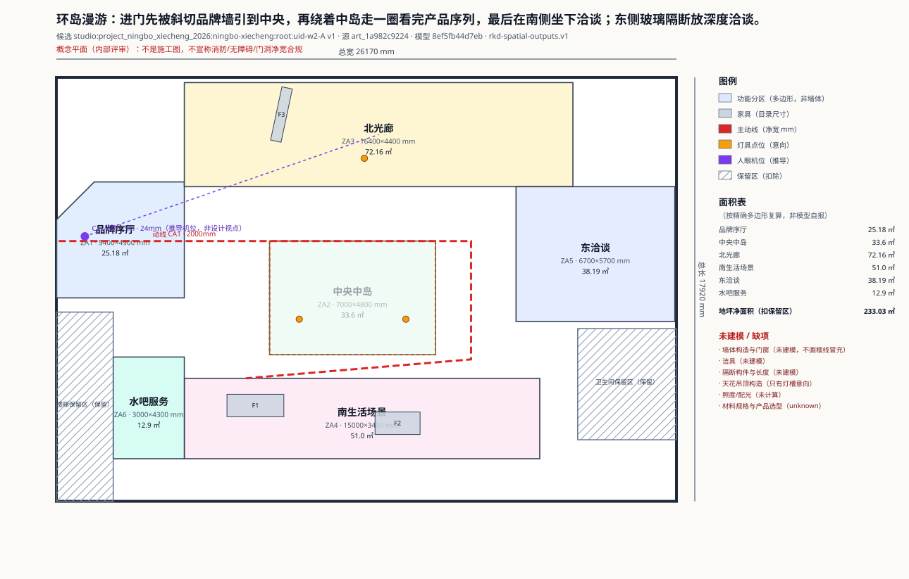
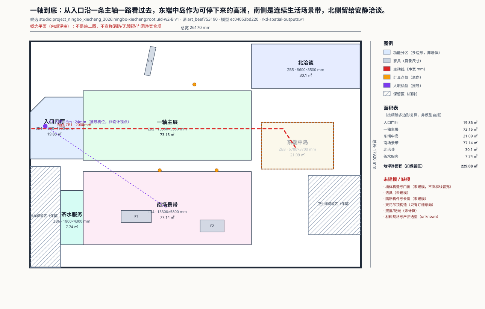
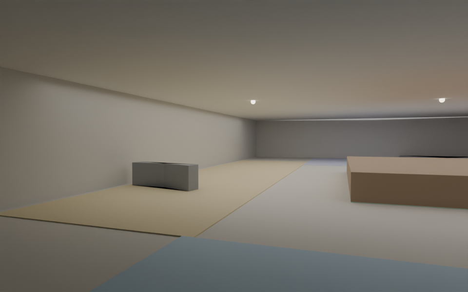
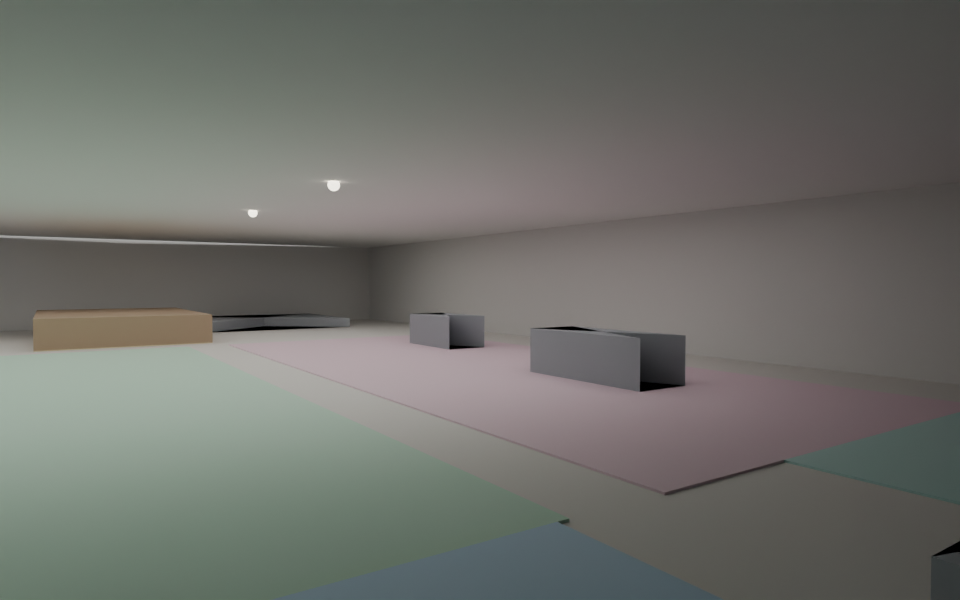

W2 同源成果切片 · 评审入口
这是内部评审材料：概念平面不是施工图；效果图机位/材质/家具高度是渲染假设；
金额没有价源，全部 unknown，不是报价。设计与阶段成果是否成立只能由用户判断。
两种布局（同一生成器）
| 布局 | 候选 | 模型哈希 | 精确净量 | bbox 对照 | 渲染耗时 |
|---|
| A | studio:project_ningbo_xiecheng_2026:ningbo-xiecheng:root:uid-w2-A | 8ef5fb44d7eb | 233.03 ㎡ | 234.31 ㎡（+1.28） | 46.02s |
| B | studio:project_ningbo_xiecheng_2026:ningbo-xiecheng:root:uid-w2-B | ec04053bd220 | 229.08 ㎡ | 229.8 ㎡（+0.72） | 43.64s |

布局 A · 平面（含尺寸/图例/面积表/机位）· SVG · 数量 CSV · 成本缺项 · 包

布局 B · 平面 · SVG · 数量 CSV · 成本缺项 · 包

布局 A · 人眼 1.5m / 24mm（推导机位，内部试验）

布局 B · 人眼 1.5m / 24mm（推导机位，内部试验）
缺少什么（如实）
- 没有墙体构造、门窗、柱网、洁具、隔断构件；平面不画框线冒充。
- 天花只有灯槽/灯具意向，没有吊顶构造与照度计算。
- 材料只有意向/假设，没有产品选型与样板；效果图材质是统一假设。
- 数量只覆盖功能区地坪净量（扣保留区）；隔断/天花/门窗/机电为 unknown。
- 金额没有价源，成本页只有缺项；正式报价、采购、发布未触发。